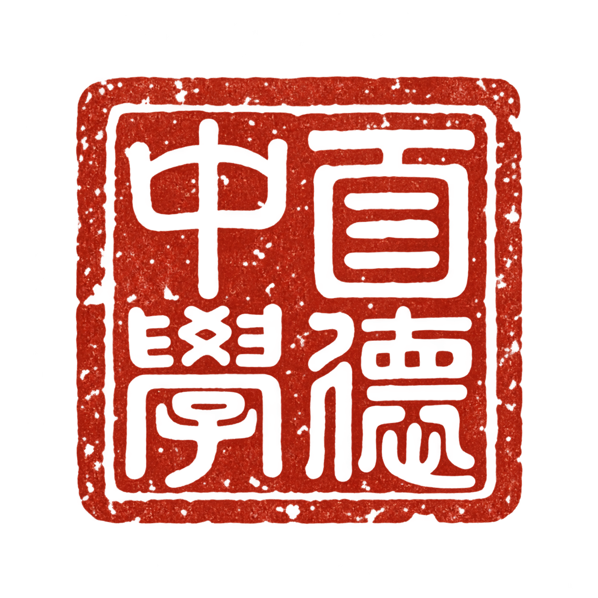

Title and school seal: sprite review
Open atlas mockupTopic Atlas

Two separate transparent sprites. Seal columns are read top-to-bottom, right-to-left: 百德 / 中學. Enlarged for owner inspection of the seal-script glyphs and distressed ink.